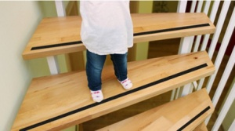

получение травмы
- Ступени должны быть со специальным антискользским покрытием
- Проверяйте прочность перил, расстояние между прутьями перил не более 10 см, не позволяйте детям залезать и кататься на перилах
- Убирайте игрушки с лестницы
- Дети до 3-х лет могут спускаться только под присмотром взрослых, самостоятельно могут упасть вследствие несовершенства координации движений
- Оставляйте включенным свет на лестнице, если нет ограждения
- пожалейте малыша, успокойте, отвлеките на что-то интересное;
- приложите к месту ушиба на 20 минут пакет льда, предварительно завернув его в полотенце;
- при кровотечении приложите сухой тампон к ране;
- наблюдайте за малышом: если сознание ясное, то через 15 минут после травмы ребенок ведет себя как обычно, веселый, играет;
- продолжайте наблюдение в течение 24 часов
ТРЕВОЖНЫЕ ПРИЗНАКИ В ТЕЧЕНИЕ 24 ЧАСОВ
- потеря ориентации, проблемы с пробуждением;
- необычное дыхание во сне;
- косоглазие, неравные зрачки, черные круги вокруг глаз;
- рвота, частое срыгивание;
- увеличивающаяся бледность;
- кровь или водянистая жидкость из слухового прохода;
- судороги;
- потеря равновесия при ходьбе и ползании
ВАЖНО ЗНАТЬ:
- при появлении любого из перечисленных тревожных признаков и при потере сознания сразу после удара – немедленно обращайтесь к врачу!
- При повреждении кожных покровов: сухой тампон на рану, обратитесь к врачу
